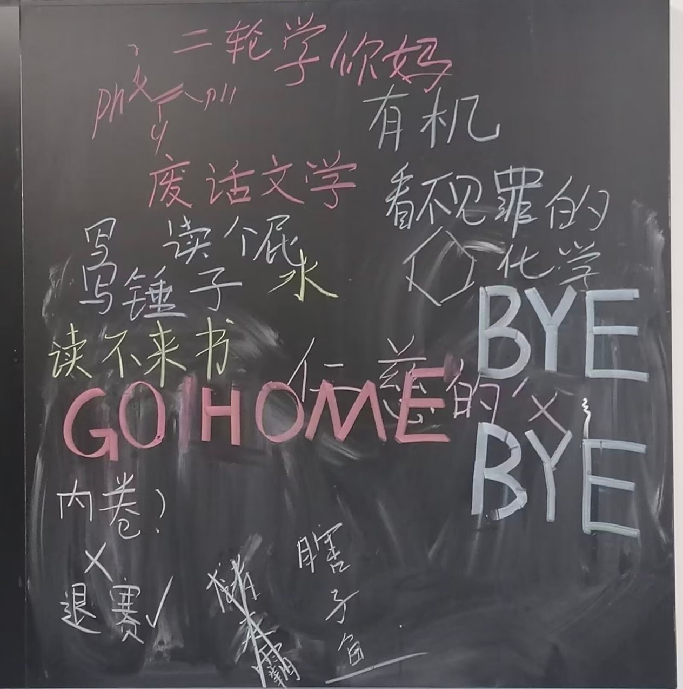
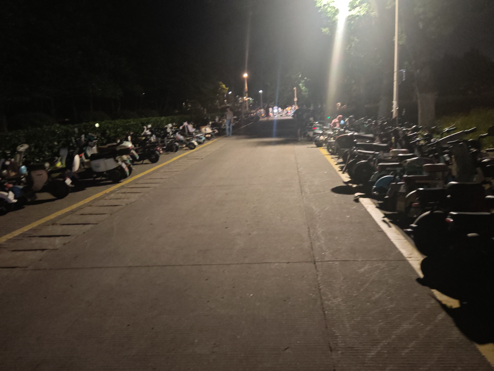
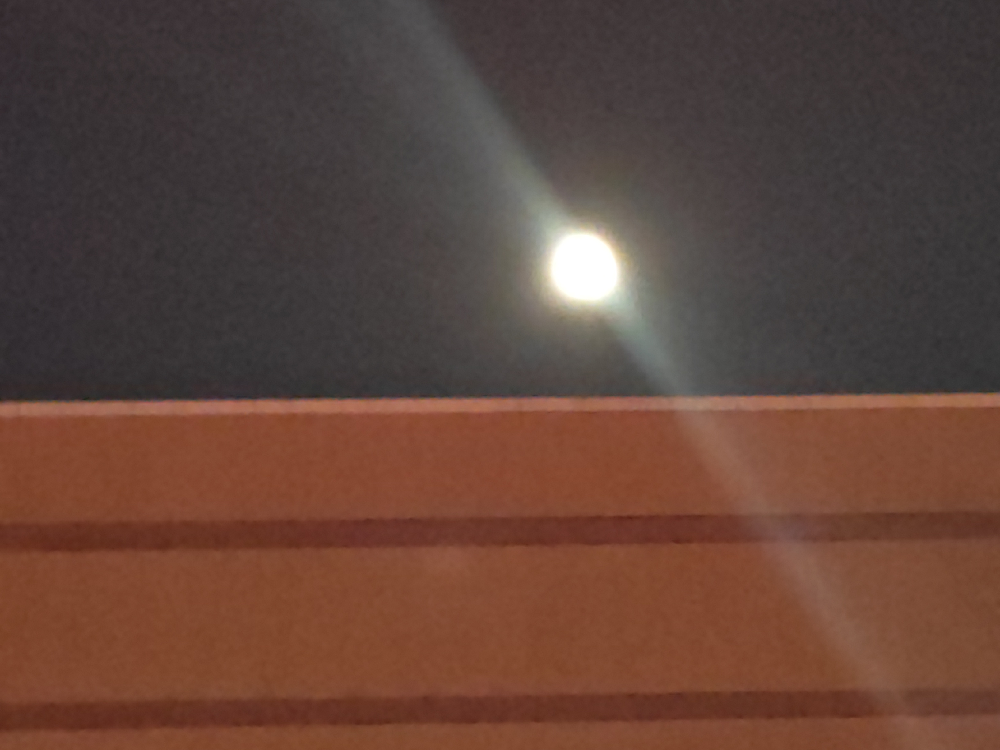

已经成了鱼骨的鱼
少聚多散，但并不孤独
之前的同学们，天各一方，就算是同学校也没有时间见面，但是高中的点点滴滴依然在我的脑海里回响。QQ上偶尔的斗嘴也不由得让我怀念起那段不算美好，但现在又有些怀念的艰苦岁月。
孑然一身，但并不孤独
上大学以后，虽然也会和同学，室友相谈甚欢，但终究不如高中同学那般知己知彼，无话不谈，很多时间都是一个人度过。一个人吃饭，一个人赶早八，一个人去自习。我很难说自己是否喜欢这样的生活，但过了这么久，多少也熟悉了这种生活状况。也许，自我的成长需要这样的独处。
前路未知，但绝不孤独
“五月渔郎相忆否？小楫轻舟，梦入芙蓉浦。”作为新生，我不知道大学里还有什么在等着我，也许会有更多的独处，更少的交流，也许先前的同学会逐渐失去联系。但我相信，路漫漫其修远矣，吾将上下而求索，我能做的，不止于此.